3 个深度案例展示完整的产品思考过程，5 个简版项目补充产品经历全景。
独立完成：需求整理 → 产品设计 → AI 辅助开发 → 部署
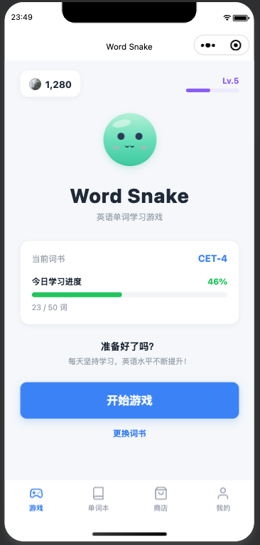
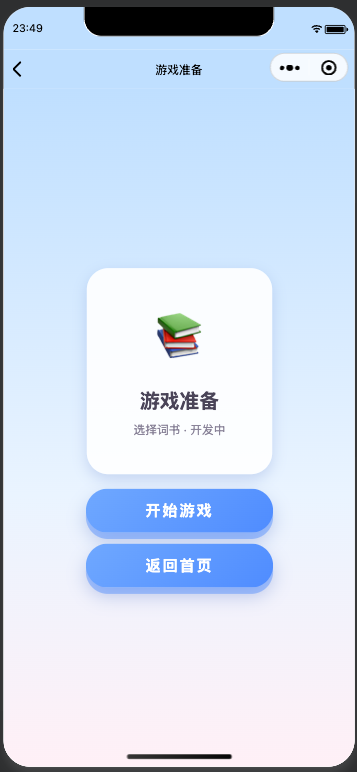
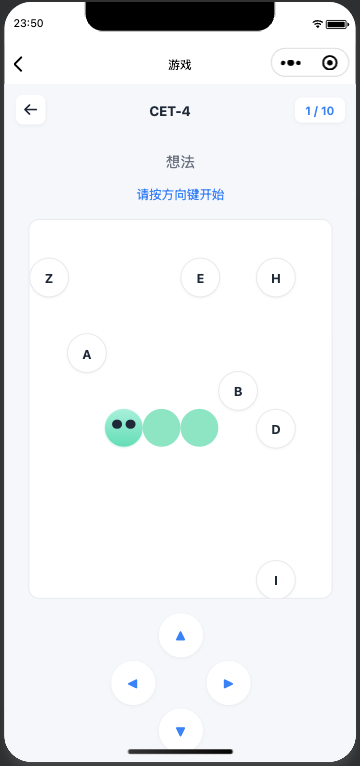
背单词枯燥、留存率低是英语学习类产品的老问题，尤其对 6 岁以上的低龄用户，传统背词 APP 的交互方式很难维持兴趣。这个项目希望验证：能否用游戏化机制（贪吃蛇）把"记忆-复现"这个背单词的核心动作，变成一个有正反馈的游戏体验。
从 0 到 1 独立完成需求整理、产品设计、AI 辅助开发到部署的全流程——没有走"写 PRD 交给研发"的传统路径，而是直接用 AI 工具亲自把产品做出来。
两个层面：产品层面，验证游戏化机制能否让背单词更有趣；个人层面，借这个项目走完一次完整的 AI 辅助开发流程，亲身验证 AI 开发工具的能力边界——这对判断"AI 能在多大程度上改变产品开发方式"是一手经验，而不是道听途说。
用户选择单词书和复习进度，游戏开始后先给 5 秒记忆时间（英文单词 + 中文释义同时显示），5 秒后英文消失只留中文释义，用户操作贪吃蛇吃对应字母拼出单词——吃对字母蛇身变长，拼完一个正确单词则按字母数缩短蛇身（形成"记忆-验证-即时反馈"的闭环），碰到自己的尾巴则失败。
首页与游戏界面（含核心玩法逻辑）已经跑通，目前处于自测阶段，功能细节和体验还在持续调整中。
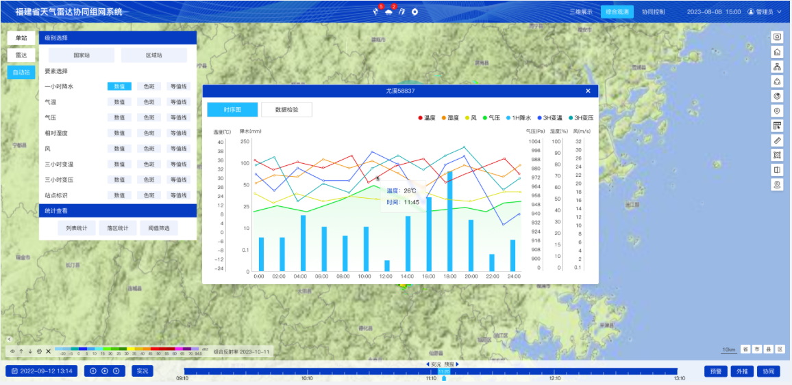
福建省气象部门需要一套天气雷达协同观测系统，实现全省气象站点的数据接入与协同观测能力，这是一个从 0 到 1 新建的系统。
独立担任产品经理，负责从用户需求对接到系统落地的全流程。
搭建覆盖福建省全部气象站点的协同观测系统，满足客户在降水产品、交互体验、多站点协同上的核心诉求。
面对覆盖全省站点、需求来源分散的挑战，没有停留在"一次性交付"，而是主动建立了常态化沟通机制，把项目从"一次性验收"变成"持续迭代"的模式——这也是文档能稳定产出 5 个版本、需求能被持续追踪修正的支撑。
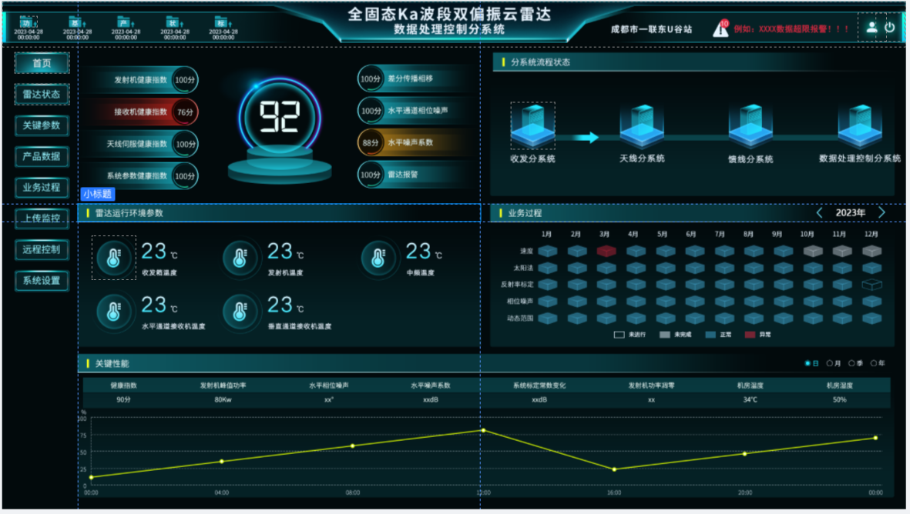
配合公司自研硬件产品"云雷达"，需要一套数据处理控制系统作为配套软件——这是公司第一款此类产品，没有历史经验可参照。
产品经理，负责功能梳理、原型设计与立项材料撰写。
推动系统通过内部评审并成功立项，为云雷达硬件后续的芯片化升级打好软件基础。
作为公司首款此类产品，页面展示逻辑没有先例可循，评审阶段经历多轮修改——没有把"多次被打回"当成挫折，而是把每一轮评审意见当作产品逻辑打磨的输入，持续迭代页面展示逻辑直到通过。
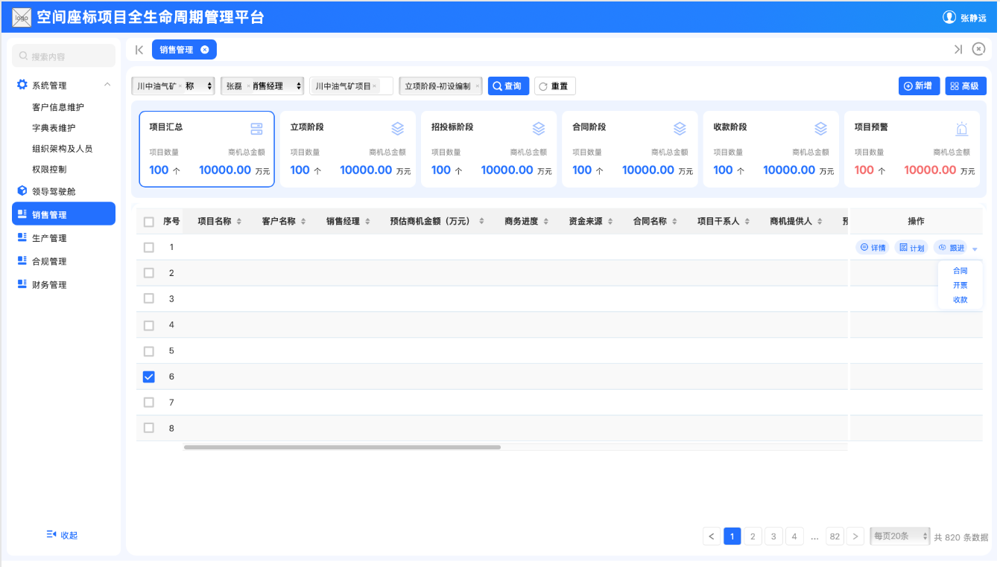
自研项目管理系统需求分析，独立完成"商机管理模块"设计。
查看原型 →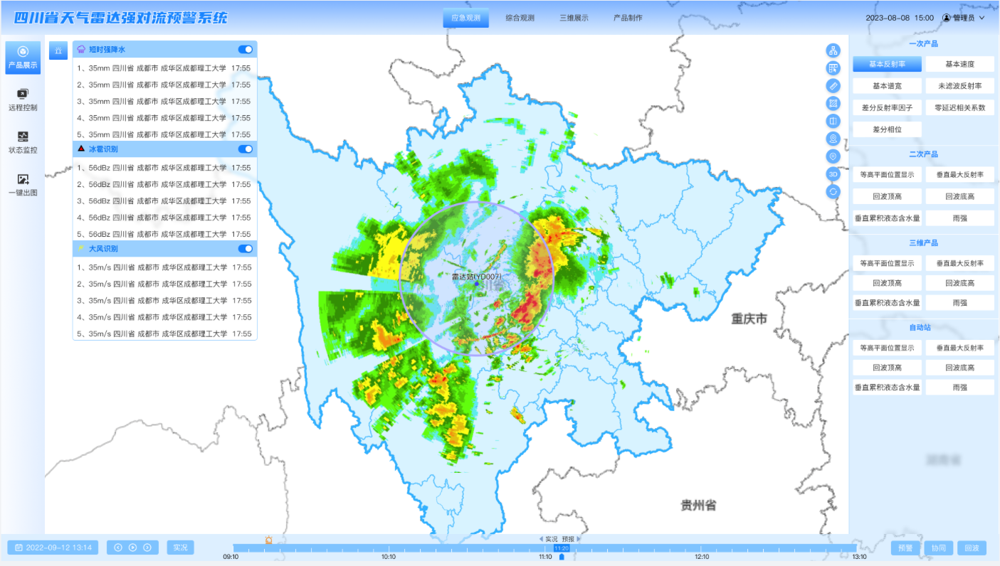
多端协同平台原型设计，满足客户数据质控与预警展示诉求。
查看原型 →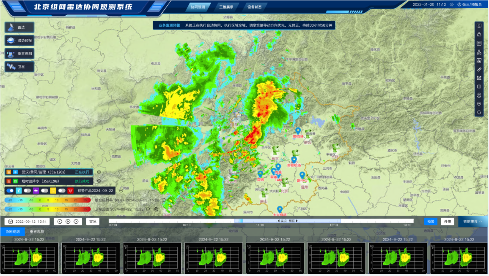
主导验收资料筹备与客户对接，保障项目顺利通过验收。
查看原型 →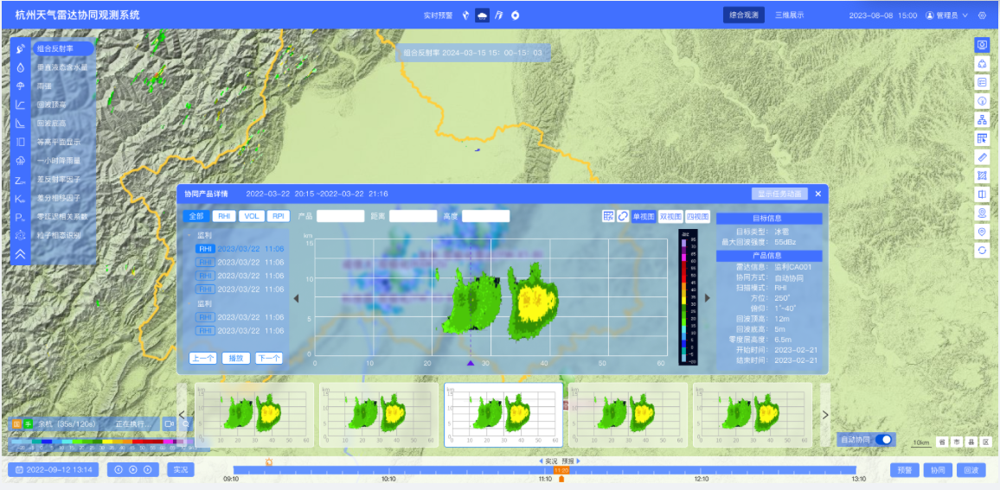
需求调研与原型迭代，推动项目通过终期验收及软著申请。
查看原型 →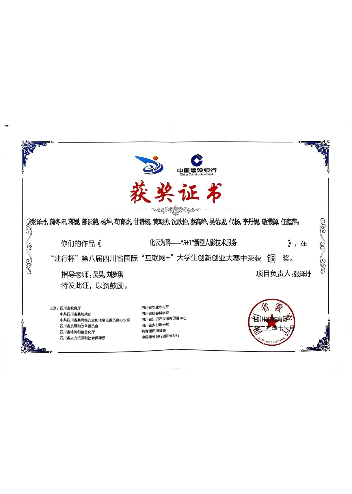
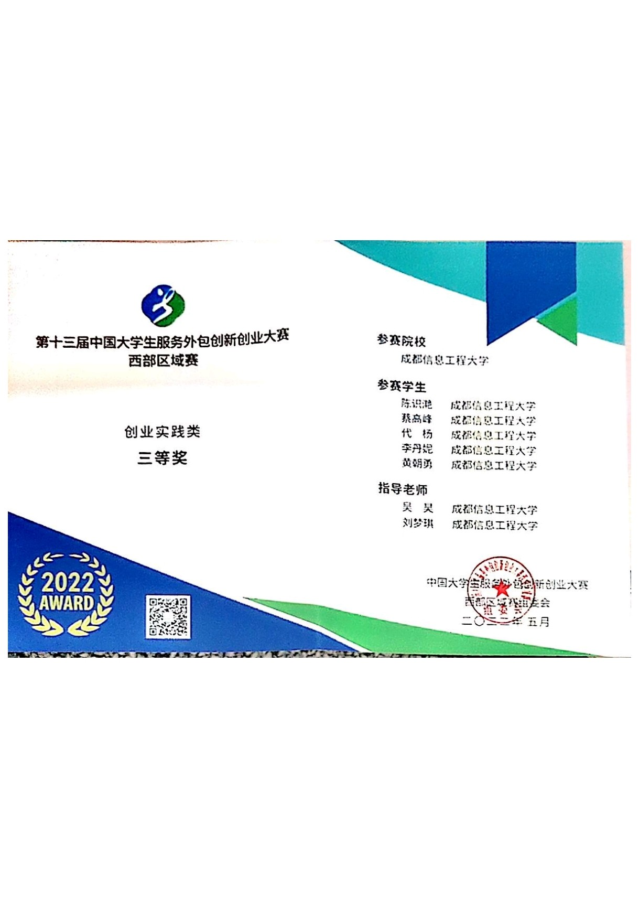
科技助农主题项目，获省级铜奖及全国区域赛三等奖。